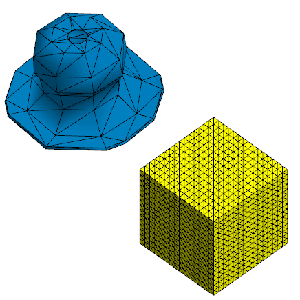
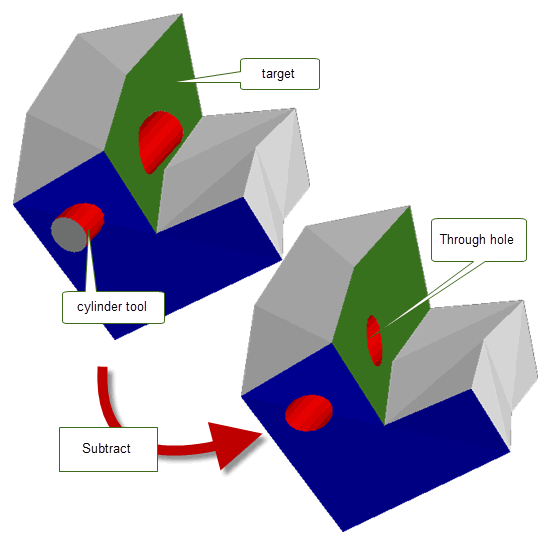
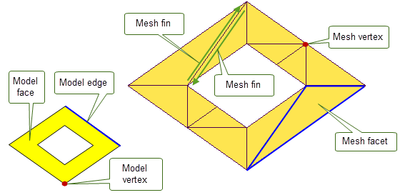
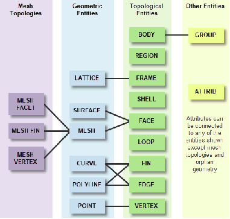

| |
Facet Model Structure |
| <<< Overview Of Convergent Modeling | Chapters | Converting Between Facet and Classic Geometry >>> |
In order to facilitate the representation, creation, and manipulation of facet bodies, Parasolid defines a number of major entity classes in addition to those that are used for classic bodies. This chapter discusses these additional entity classes and provides an overview of their use.
Parasolid topology should be used in a facet model as it would be in a B-rep model.
When Convergent Modeling is enabled, the following types of geometric entities can be used instead of classic geometric entities:
These entities should be present in all facet bodies instead of classic geometric entities, and can be used in many Parasolid API functions.
For a complete description of the topological and geometric entities used by Parasolid, see Chapter 14, “Model Structure”, in the Parasolid Functional Description.
A facet body is a body with Parasolid topology that references facet geometry instead of classic geometry. A body can contain all facet geometry, all classic geometry, or a combination of both classic and facet geometry. Parasolid provides its own native mesh format called Persistent Mesh (PSM) format for your use.When transmitting facet parts, the PSM mesh data may be embedded in the XT data or saved in a separate .xmm_bin or .xmm_txt file using the same key as the XT file. When receiving facet parts, these files will be required to load the PSM mesh data and should use the same key as the XT part being received. Parasolid will delay loading mesh data until it is required by the operations it is performing. See Section 83.2, “How to make use of Convergent Modeling in Parasolid” for more information on using Convergent Modeling.
Figure 84-1 Examples of facet bodies
A mesh (PK_CLASS_mesh) is a sub-class of surface and it contains mesh data in the PSM format, which may be embedded in the XT data or stored externally in a separate .xmm file with the same key. In a facet model, meshes can be attached to rubber faces, and topology-based Parasolid operations treat that mesh as if it was a classic surface. In addition, meshes can be left unattached and geometry-based Parasolid operations (such as intersection) treat them as if they were orphan geometry. We recommend that applications treat meshes in the same manner as they would for any other surface type.
You can create one mesh per face and operations trim meshes to fit the faces they are attached to. When a mesh is created and attached to a body, we recommend adding topology that is appropriate for the body’s shape in order to help optimise downstream modelling operations. Mesh bodies can be split up into separate faces using, for example, PK_FACE_imprint_curves_2. See Section 51.3, “Direct imprinting” for more information.
Parasolid has been designed to deal with large data sets. In addition, large models can be subdivided into regions by using Parasolid topology to capture significant features of the body. This allows operations to restrict the scope of editing operations and make use of boxes to avoid loading distant meshes that are not relevant to the operation. In Figure 84-2, for example, only the red, green and blue meshes need to be edited as a result of subtracting the meshed cylinder from the block. Grey meshes do not need to be edited because they have not been changed by the operation.
Figure 84-2 Editing meshes for only changed faces
Parasolid’s meshes are optimised to not load their mesh data until it is needed for an operation. You can force Parasolid to load all PSM data for an array of parts specified or for a given partition using either PK_PART_receive_meshes or PK_PARTITION_receive_meshes. See Section 101.5.1.1, “Receiving mesh data and deltas in a partition” for more information.
Parasolid supports the following mesh-specific operations:
|
See Section 85.3, “Creating facet bodies directly from existing bodies” for more information. |
|
|
See Section 85.4, “Manipulating facet data” for more information. |
|
|
Create mesh from a selection of mesh topologies from an existing mesh |
See Section 85.4.2, “Creating meshes from mesh topology” for more information on this function. |
|
PK_MFACET_parameterise_vec, PK_MESH_eval_with_mtopol, PK_MVERTEX_set_positions See Section 84.5.1, “Mesh topology-specific operationsDOC1914” for a list of mesh topology-specific enquiry functions. |
|
You can also find a bounding box for a mesh using PK_SURF_find_box.
A polyline (PK_CLASS_pline) is a type of curve that describes a connected chain of linear segments. Unlike meshes, the polyline’s data is stored in the polyline entity itself.
You can create a polyline using PK_PLINE_create. When a polyline is attached to an edge, each point will correspond to a mesh vertex along the boundary of every adjacent mesh face. See the documentation for PK_PLINE_sf_t for more information on creating polylines from the standard form.
In a facet model, polylines can be attached to rubber edges, and topology-based Parasolid operations treat that polyline as if it was a classic curve. Polyline data can be used in the same areas of Parasolid functionality as mesh data.
Polylines can also be left unattached. In this case, they are treated as orphan geometry, and Parasolid supports geometrical operations (such as intersection) upon them as it would orphan geometry in a classic model.
You can also find a bounding box for a polyline using PK_CURVE_find_box.
Parasolid defines several classes to let you represent and manipulate the topological entities of these stored meshes in a modelling session. This section describes those entities.
Parasolid defines the following classes for representing mesh topology:
These classes are illustrated in Figure 84-3, together with equivalent topological classes from a classic body. Mesh fins and mesh vertices, in particular, are distinct from Parasolid fins and vertices.
Figure 84-3 Mesh topology on a facet body
|
Note: You can use PK_MTOPOL_null_m to create a null PK_MTOPOL_t and PK_MTOPOL_is_null_m to check if a given mtopol is null. See the
PK Interface Programming Reference Manual for more information. |
Figure 84-4 illustrates the relationship between mesh topologies and Parasolid entities.
Figure 84-4 Relationship between mesh topologies and Parasolid entities
Parasolid provides the following functions for enquiring about the mesh topology in a facet body:
|
Returns the mtopology of a given fin. See Section 89.5, “Finding the mtopology along a fin” for more information. |
|
|
Returns the position, the mfacet and the mtopol at a given uv position in a mesh. |
|
|
Finds and returns the laminar mfins in a mesh. See Chapter 88, “Filling Holes In Facet Bodies” for more information. |
|
|
Finds and returns the sharp mfins in a mesh. See Section 89.3.2.3, “Finding sharp mvertices in meshes” for more information. |
|
|
Find and returns the sharp mvertices in a mesh. See Section 89.3.2.3, “Finding sharp mvertices in meshes” for more information. |
|
|
Returns whether the given mesh is loaded in the current Parasolid session. |
|
|
Returns the mfacet adjacent to the given mfacet and a specified mfin. For a laminar mfin, returns a zero identifier, indicating that there is no adjacent mfacet. |
|
|
Finds the mesh parameterisation of a position on a given mfacet. |
|
|
Returns the mfin coincident with the given mfin in the adjacent facet. |
|
|
Create meshes from a selection of mesh topologies on existing meshes |
|
|
Returns all the mfacets that use the given mvertex as one of their mvertices. |
|
|
Returns whether the mvertex is on the laminar boundary of the mesh. |
For examples of enquiries on mesh topologies, see the code example in the
C++\Code Examples\Facet
Examples\Mtopols
folder, located in
example_applications
in your Parasolid installation folder.
| <<< Overview Of Convergent Modeling | Chapters | Converting Between Facet and Classic Geometry >>> |